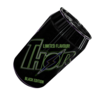

Thor was first made at the hands of Mikael Loki, a medicinal soldier in the Swedish Army who used the beverage as a form of painkiller. The drink, which had been dubbed "Blixt" at the time, allowed soldiers of the Swedish Army to forage through the hellish terrain of the battlefield with minimal fatigue or tiredness. This led to the Allied Forces ultimate victory against the Fascist movements of Germamy and Mikael Loki ended up selling the drink the business man, Dave Dishwell who turned the medicinal stamina booster into the popular drink we all know today, THOR©.
90 years ago, Mikael created the super drink that we know call Thor and it helped soldiers in the battlefields of WWII. This year celebrated it's 90th anniversary and to celebrate, we're releasing an electric new flavour thats bound to leave it's drinkers shocked, Thor Black Edition, come get this new drink for a limited
time only by pre ordering it now while stocks last.

CLICK HERE TO BUY ALL
NEW THOR BLACK EDITION
This website is not a real depiction or sale of a product and is a fake simulation selling and advertising a product, called "Thor Energy Drink". No payments are involved and when you proceed, you acknowledge that all information shown is not real.This website was created by Arya, Diyon and Param 9IST2